Data Analysis using IBM SPSS Statistics
Slot 4 Web Notes
ESTABLISHING RELATIONSHIPS
PURPOSE:
- To establish dependence (cause-effect) relationships between two or more variables
- To establish the inter-relationships between two or more variables.
TECHNIQUES:
- Dependence Relationships
- Correlation
- Multiple Regression
- Discriminant Analysis
- Correlation
- Non-dependence Relationships
- Correlation – Canonical Correlations
- Factor Analysis
- Correlation – Canonical Correlations
a. Correlation
Correlation analysis is used to describe the strength and direction of the linear relationship between 2 variables.
- Pearson – continuous variables
- Spearman – ordinal variables
Analyze --> Correlate Bivariate
Strength:
0.10 – 0.29 Small
0.30 – 0.49 Medium
0.50 – 1.00 Large
SPSS Output
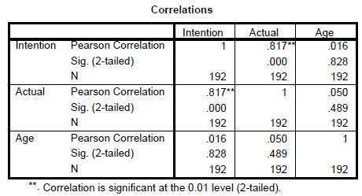
In Report APA Style
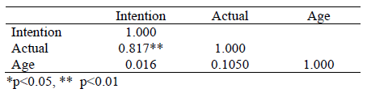
SPSS Output
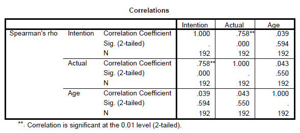
Exercise 7:
Test the intercorrelations of the main variables in the study.
Result
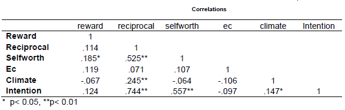
b. Simple Linear Regression
Simple linear regression is used when we would like to see the impact of a single independent variable on a dependent variable.
Analyze --> Regression --> Linear
SPSS Output
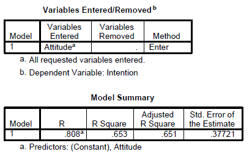
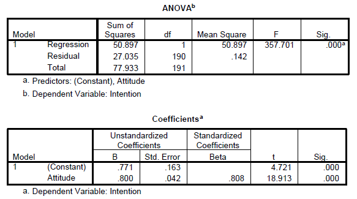
Exercise 8:
Run several simple linear regression using expected rewards, reciprocal relationship, expected contribution, self worth and climate as independent variable one at a time against intention to share.
c. Multiple Linear Regression
Multiple linear regression is used when we would like to see the impact of more than one independent variable on a dependent variable.
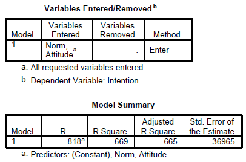
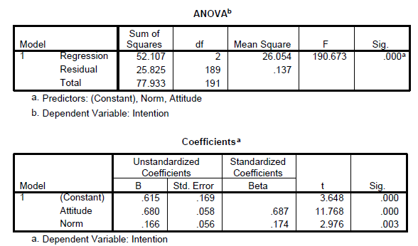
ASSUMPTIONS:
- Normality
- Normality of the error terms
- Linerity
- Multicollinearity
- Constant Variance – Homoscedasticity
- Outliers
- Independence of the error term
Multiple Linear Regression
Multiple regression analysis is a statistical technique that can be used to analyze the relationship between a single dependent variable (continuous) and several independent variables (continuous or even nominal). In the case of nominal independent variables, dummy variables are introduced.
\(Y = a + b_1X_1 + b_2X_2 + b_3X_3 + e\)
Where:
\(Y\) = Dependent variable
\(a\) = Intercept
\(b_1,\ b_2,\ b_3\) = regression coefficients (slope)
\(X_1,\ X_2,\ X_3\) = Independent variables
\(e\) = random error
Things to consider:
- Strong Theory (conceptual or theoretical)
- Measurement Error
- The degree to which the variable is an accurate and consistent measure of the concept being studied. If the error is high than even the best predictors may not be able to achieve sufficient predictive accuracy.
- Specification error
- Inclusion of irrelevant variables or the omission of relevant variables from the set of independent variables.
ASSUMPTIONS:
1. Normality
One of the basic assumptions is the normality which can be assessed by plotting the histogram. If the histogram shows not much deviation then we can assume the data follows a normal distribution.
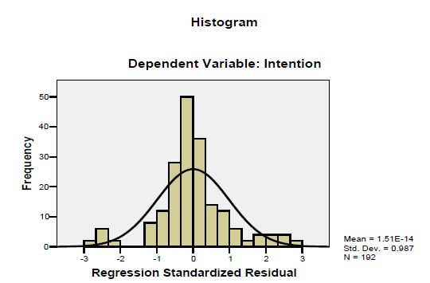
2. Normality of the error terms
The second assumption is that the error term must be normally distributed. This can be assessed by looking at the normal P-P plot. The idea is that the points should be as close as possible to the diagonal line. If they are then we can assume that the error terms are normally distributed.
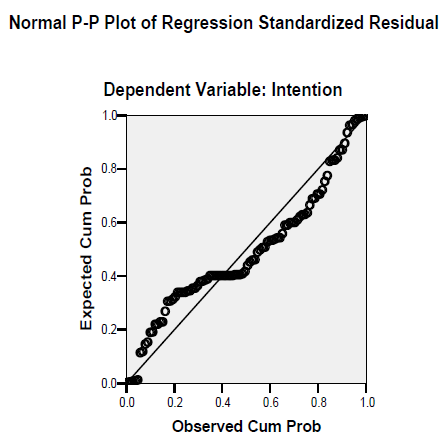
3. Linearity
The third assumption is the relationship between the independent variables and the dependent variable must be linear. This is assessed by looking at the partial plots. The idea is to see if we can draw a straight line on the scatter plot that is generated.
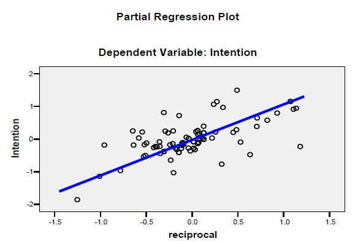
4. Constant Variance – Homoscedasticity
The fourth assumption is that the variance must be constant (Homoscedasticity) as opposed to not constant (Heterosedasciticity). Heterosedasciticity is generally observed when we see a consistent pattern when we plot the studentized residual (SRESID) against the predicted value of Y (ZPRED).
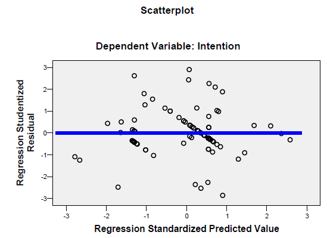
5. Multicollinearity
The fifth assumption is the collinearity problem. This is a problem when the independent variables are highly correlated among one another, generally at r > 0.8 to 0.9 which is termed as multicollinearoty. As the term independent variables connotes they should not be correlated at all among one another, low to moderate correlations are the norm and does not pose any serious problems. To assess this assumption we will look at two indicators. The first one is the VIF and tolerance. A low tolerance value of < 0.1 will result in a VIF value of > 10 as VIF is actually 1/Tolerance. If the value is more than 10 we can suspect there is a problem of multicollinearity. The second value that we should look at is the conditional index. If this value exceeds 30 we can also suspect the presence of multicollinearity. When the value is more than 30 we should also look across the variance proportions and see if we can spot any 2 or more variables with a value of 0.9 and above excluding the constant. If there are 2 or more than only we can conclude there is multicollinearity.
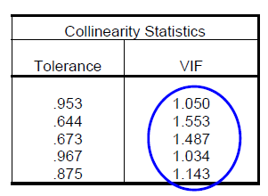
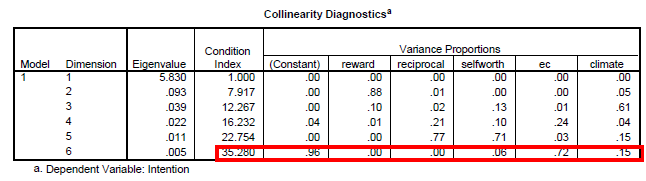
6. Independence of the error term - Autocorrelation
This is an assumption that is particularly a problem with time series data and not for cross sectional data. We assume that each predicted value is independent, which means that the predicted value is not related to any other prediction; that is, they are not sequenced by any variable such as time. This can be assessed by looking at the Durbin Watson value. If the D-W value is between 1.5 – 2.5 then we can assume there is no problem.
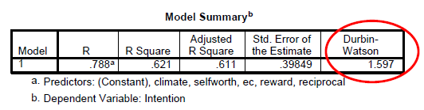
Formula:
\(D\ =\ \frac{\sum_{i=2}^n\ (r_i\ -\ r_{i-1})^2}{\sum_{i=1}^n\ r_i^2}\)
Durbin-Watson Statistic, D
- 0 \(\le\) D \(\le\) 4
- D \(\approx\) 2 - No autocorrelation
- D < 1.5 - 1st order + ve autocorrelation
- D > 2.5 - 1st order - ve autocorrelation
7. Outliers
These are values which are extremely large and influential that they can influence the results of the regression. Usually the threshold is set at 3 standard deviations. Although this is the default some researchers may set a threshold of 2.5 to get better predictive power. This assumption can be easily identified by looking at whether there are casewise diagnostics.
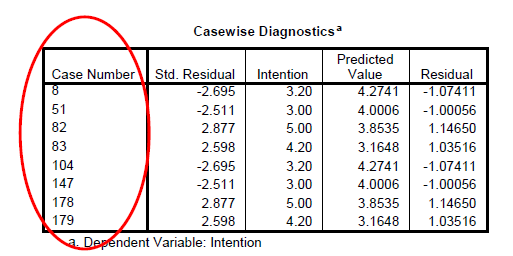
We need to deselect the cases identified and re-run the regression analysis to see the impact to the predictive power after taking out these outliers. If the impact is very minimal then we can conclude that these outliers are not influential.
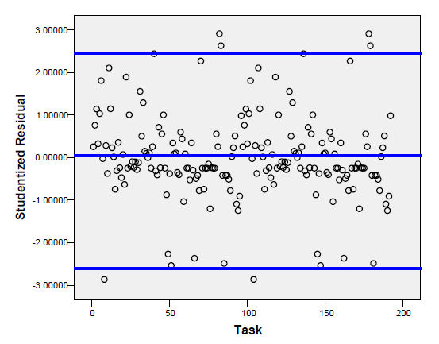
Advanced Diagnostics
There are several other measures that can be looked at to ascertain influential observations among them the more popular values looked at are Mahanalobis Distance, Cooks value and Leverage values.
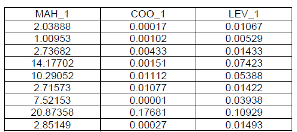